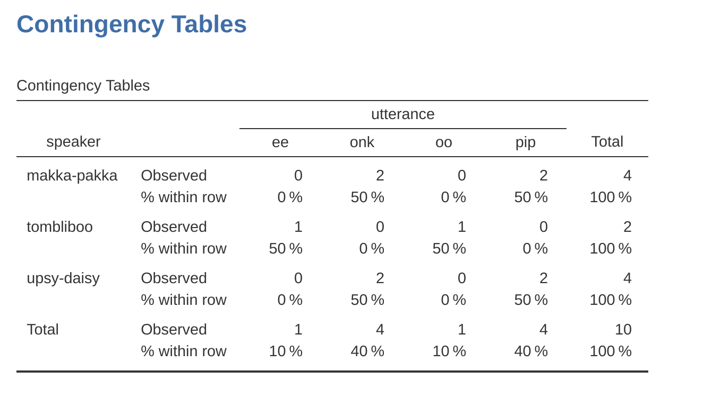
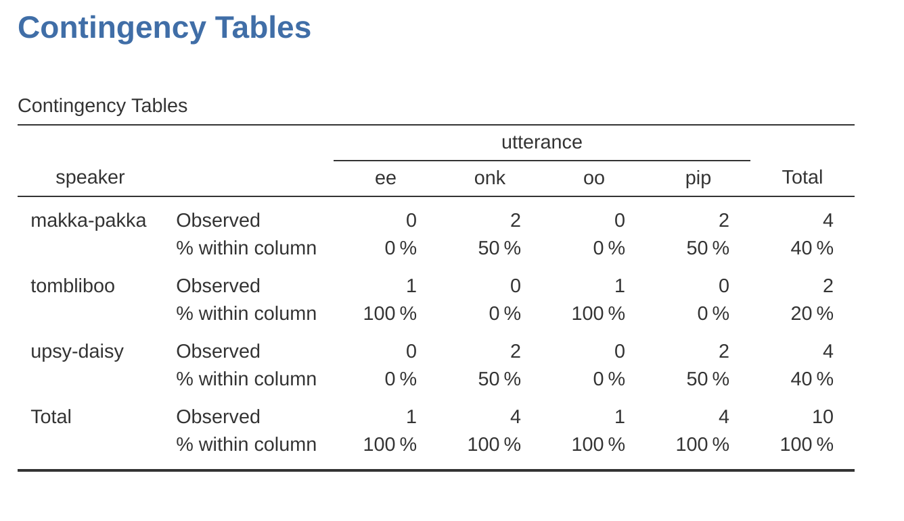
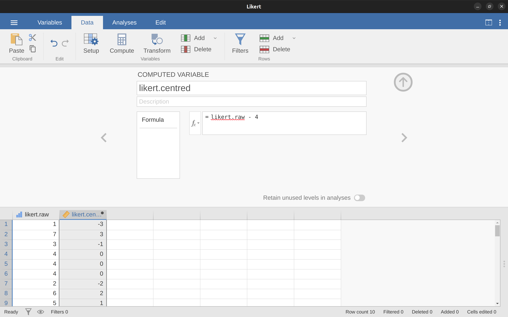
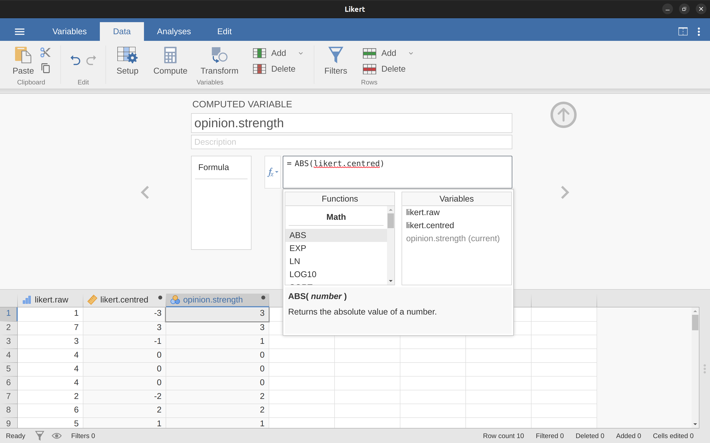
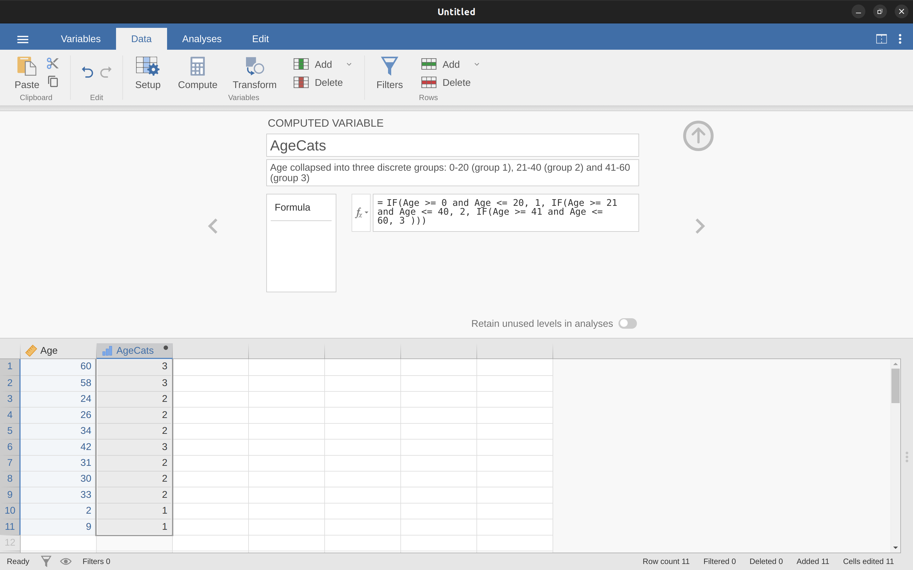
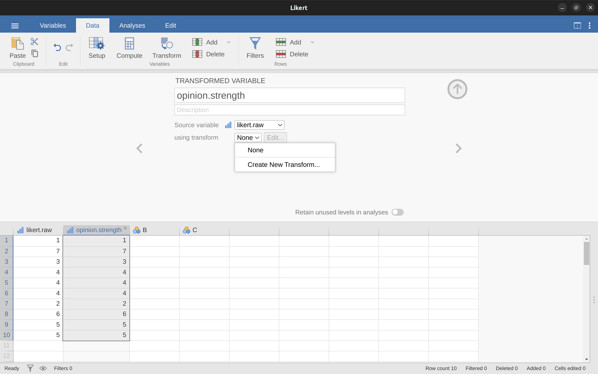
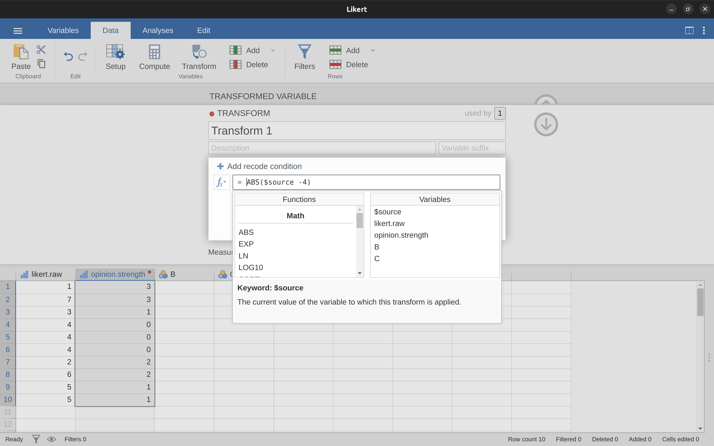
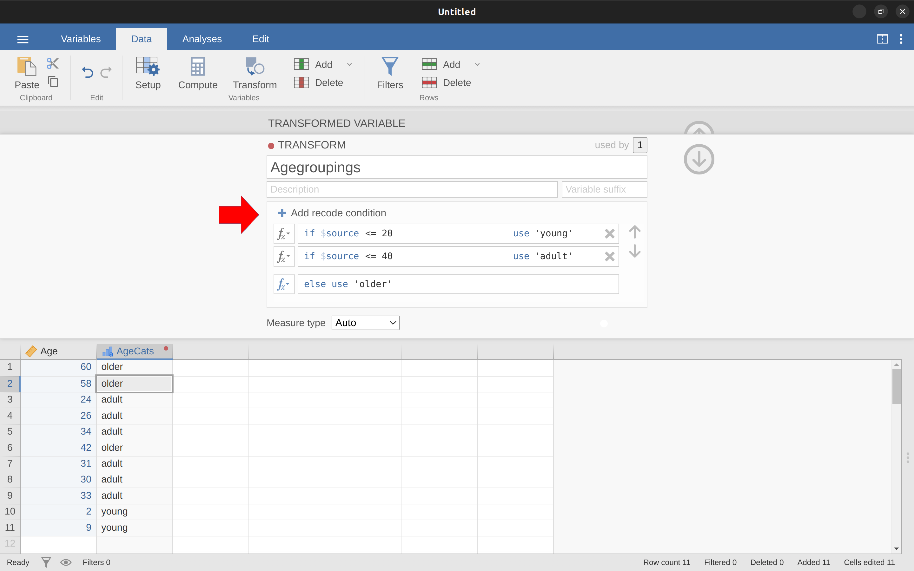
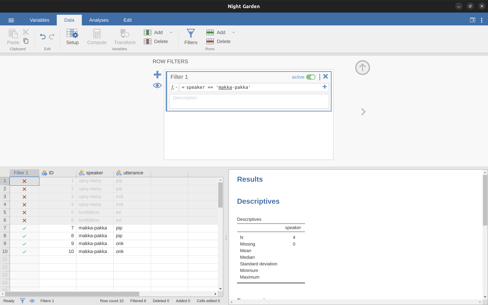

| 角色名字 | 發言次數 | 發言百分比 | 累積百分比 |
|---|---|---|---|
| makka-pakka | 4 | 40 | 40 |
| tombliboo | 2 | 20 | 60 |
| upsy-daisy | 4 | 40 | 100 |
6 實務課題
The garden of life never seems to confine itself to the plots philosophers have laid out for its convenience. Maybe a few more tractors would do the trick.
– Roger Zelazny1
這一章要學習的課題，一般基礎 統計教科書幾乎都不會涉及。這章要談的幾個課題，是後續各章介紹的方法在現實統計實務操作時會遇到的狀況。現實統計實務遇到的狀況特色是雜亂。最常遇到的狀況是你在預覽資料時，發現資料變項並非按照規畫的格式存檔。有時你可能會發現資料裡有一大堆數值遺漏。有時只需要處理上千萬筆資料中的幾百筆。還有許多狀況不一而足。也就是說，同學們也要學習各種資料操作技巧，才能應付各種統計實務的現實狀況。本章目標提供各種實務課題的概述。雖然這章的課題牽涉各種現實狀況，為了幫助同學理解，每個課題的範例都是以設計過的小型資料做示範。由於這一章純粹談技術，沒有一個通用案例貫串每個課題，這些課題包括：
這一章討論的課題很廣泛，而且各有不少篇幅。雖然這一章的長度應該是本書前三名，但是討論的五個課題只是原作者認為相對重要的一部分資料操作技巧。原作者建議與各章相同，同學先讀過一遍，再試著按照範例操作。其餘各章只有少部分會提及實務課題，只要先有基本概念即可。當同學在後續各章發現有需要深入理解的實務課題，再回到這一章了解有什麼解決方法。
6.1 製作次數表及列聯表
幾乎每項統計分析實務都要建立次數表(frequency table)或資料變項列聯表(cross tabulation)。這一節示範如何運用jamovi完成。
6.1.1 製表示範
此處以原作者某天晚上照顧剛出生的小孩的時候，偶然看了一集深夜節目，隨手紀錄節目中出現的角色及台詞，整理成”說話者(speaker)“與”台詞(utterance)“兩個變項。這份記錄存於jamovi示範檔案Night Garden，開啟後兩個變項的內容如下：
資料變項’說話者’: upsy-daisy upsy-daisy upsy-daisy upsy-daisy tombliboo tombliboo makka-pakka makka-pakka makka-pakka makka-pakka 資料變項’台詞’: pip pip onk onk ee oo pip pip onk onk
那一晚原作者的腦袋發生了什麽事？讓我們將每個角色的說話次數做成表格吧，只要用將資料變項’speaker’放到jamovi述統計模組選單的Variables視窗，再勾選啟動’Frequency tables’，報表介面就會出現像是 表格 tbl-tab6-1 的次數表。
次數表表格第一行是speaker資料變項的各種基本統計資料的欄位名稱。像是”Levels”這欄列出紀錄在變項裡的所有角色名字，“Counts”這欄之中的數字是每位角色說了幾次台詞。
jamovi的”Frequency tables”功能只能製作一個變項的次數表。若是要製作能展示兩個變項的列聯表，像是計算每個角色’speaker’講了各種台詞’utterance’幾次，就要使用Frequencies模組之中的Contigency Tables-Independent Samples功能。功能選單如同 图 fig-fig6-1 ，請按照畫面範，製造兩個變項的列聯表。
各位先不必管報表最下面的”\(\chi^2\) 檢定”，這是 sec-Categorical-data-analysis 的學習項目。解讀列聯表的關鍵是表格中每個數字是計數，像是第一列第二欄的”2”是指Makka-Pakka這個角色說了”onk”這個台詞2次。
6.1.2 列聯表裡的百分比
图 fig-fig6-1 的列聯表呈現的是原始計數，也就是兩個變項內各層次資料組合的總次數。不過統計實務通常也要呈現次數百分比。在這個例子，只要從’Contingency Tables’功能選單下的’Cells’次選單勾選啟動Percentages之下的方塊。 图 fig-fig6-2 示範啟動Row，自動計算每個原始計數在各列之內的百分比。

列內百分比讓我們知道每位角色說的台詞次數百分比，所以Makka-Pakka講的台詞有50%是”pip”，另外的50%是”onk”。若是改成計算每欄之內的百分比(取消Row並改成Column)，列聯表就會變成如 图 fig-fig6-3 的樣子。這樣的列聯表告訴我們那個台詞被那些角色講了幾次。像是”ee” 100% 是Tombliboo講的。

6.2 邏輯運算
在jamovi進行資料轉換，多數狀況都要使用邏輯值設定轉換條件。邏輯值是指根據某種條件評估，評估結果為真或為假。用jamovi執行邏輯評估相當直覺，執行結果只有TRUE或FALSE兩種數值。儘管簡單，邏輯值在許多統計實務場景相當有用。以下介紹常見的運作範例。
6.2.1 判斷算式真假值
喬治．歐威爾的著名反烏托邦小說「1984」虛構的極權政府經常向不順從的人民宣傳「2 + 2 = 5」。這個設定表達了當政治極權壓過了人類的自由思想，有可能會顛覆人們對現實世界的基本認知。小說中驚悚的高潮，是當男主角史密斯．溫斯頓終於無法忍受刑求，接受了極權宣傳，同意「2 + 2 = 5」。小說有個主張「人的可塑性是無限的」，原作者相當不同意這樣的主張，同意的話就無法使用jamovi了。至少在處理基本邏輯運算的問題，jamovi不可能給出「刻意塑造」的答案。同學們可以試著在jamovi計算變項設定選單，輸入 \(2 + 2\) 看看會不會得到極權政府要人民相信的52！
到目前所學的，都是使用jamovi進行計算。還沒有做過判斷 \(2 + 2 = 4\) 為真的例子。同學只要在計算變項設定選單的公式視窗裡輸入 \(2 + 2 == 4\) ，就會在試算表介面看到真值(true)。
這個例子用到了一種邏輯運算子：相等運算子 \(==\) 3。我們現在可以用這個運算子，看看jamovi會不會服從極權統治，請在公式視窗輸入小說裡的判斷式：
\[2 + 2 == 5\]
這個例子是讓同學們牛刀小試，了解如何在jamovi裡設定邏輯判斷式。如果同學有機會使用其他程式語言測試，像是R，會得到錯誤訊息。最新版的jamovi也會偵測使用者輸入的相等運算子是否正確，如果輸入錯誤，就會得到相當醒目的錯誤訊息4。
6.2.2 邏輯運算子
透過上一節的簡單示範，我們了解邏輯運算子如何運作，結合其他運算子與函式會有更多用途。像是這兩個例子： \(3 \times 3 + 4 \times 4 == 5 \times 5\) 還有 \(SQRT(25) == 5\)
除此之外，還有其他的基本邏輯運算子，讓我們能在適合條件下運用，如同 表格 tbl-tab6-2 的示範。希望同學能從示範中自行認識各種運算子的功能。像是運算子 \(<\) 用來計算左邊的數值是不是小於右邊的數值。如果運算結果為真，jamovi會傳回TRUE。如果數值相等，或者右邊的數值實際小於左邊的數值，jamovi則會傳回FALSE。
另一方面，小於或等於運算子 \(<=\) 的功能正如字面的意思，只要左邊的數值小於或等於右邊的數值就會傳回TRUE。相對地，大於運算子 \(>\) 與大於或等於運算子 \(>=\) 則是會傳回相反的真假值。
現在要理解不等於運算子 \(!=\) 的功能就比較簡單了。只有兩邊的數值都不一樣，運算結果才會是TRUE。如以下的例子，我們只要心算就知道 \(2 + 2\) 不會等於 \(5\)。同學可以開啟你的jamovi試試看。
\[2 + 2 \text{ != } 5\]
| 運算功能 | 運算子 | 輸入範例 | 輸出 |
|---|---|---|---|
| 小於 | < | 2 < 3 | TRUE |
| 小於或等於 | <= | 2 <= 2 | TRUE |
| 大於 | > | 2 > 3 | FALSE |
| 大於或等於 | >= | 2 >= 2 | TRUE |
| 等於 | == | 2 == 3 | FALSE |
| 不等於 | != | 2 != 3 | TRUE |
在 表格 tbl-tab6-3 還有三個邏輯運算子是我們必須學會的。他們是差集運算子\(NOT\)，交集運算子\(and\)，以及聯集運算子\(or\)。每個運算子的功能也如同名字的字面意思。像是我現在問同學”\(2 + 2 = 4\) 或 \(2 + 2 = 5\)“其中一個算式是真的嗎？同學一定要答”是“。因為用”或”連結的兩個命題，我們只要確定其中一個算式是真的，整個命題就為真。5
\[(2+2 == 4) \text{ or } (2+2 == 5)\]
換個問法，如果現在是問你”\(2 + 2 = 4\) 且 \(2 + 2 = 5\)“都是真的嗎？你應該要答“否”。因為這個命題是交集，兩個算式都要為真，整個命題才為真。在jamovi計算變項設定，我們可以這樣編輯：
\[(2+2 == 4) \text{ and } (2+2 == 5)\]
最後來看拗口的差集運算子。假如我問你“\(2 + 2 = 5\)這個算式非真嗎?”，你應該會答“是”。因為正確的命題應該是“\(2 + 2 = 5\)為假”。在jamovi計算變項設定，我們可以這樣編輯：
\[NOT(2+2 == 5)\]
也就是 \(2+2 == 5\) 的輸出是FALSE，\(NOT(2+2 == 5)\) 的輸出就是TRUE。這個例子讓我們曉得“非假”就是“真”。雖然現實世界許多事情真假難辨，至少在jamovi的世界一切非黑即白。資料放到jamovi不是真就是假，沒有灰色地帶。
其實我們不需要用差集運算子，得到 \(2+2 == 5\) 為假的答案，使用“等於”運算子\(==\)就是FALSE的輸出，如果要得到TRUE的輸出，使用”不等於”運算子\(!=\)就行了：
\[2+2 \text{ != } 5\]
| 運算功能 | 運算子 | 輸入範例 | 輸出 |
|---|---|---|---|
| 差集 | NOT | NOT(1==1) | FALSE |
| 聯集 | or | (1==1) or (2==3) | TRUE |
| 交集 | and | (1==1) and (2==3) | FALSE |
6.2.3 在報告中表達邏輯運算子
(以下為AI初翻，尚待校稿)
這是6.2.3節“在報告中表達邏輯運算子”的原始檔,其中使用’$’符號包圍的部分是latex code,要保持原樣不做翻譯。最後還有表格說明。我生成了以下繁體中文翻譯初稿:
我也想簡要指出,您可以將這些邏輯運算符應用於文本以及邏輯數據。只是在理解jamovi如何解讀不同運算時,我們需要更加小心。在本節中,我將談論等於運算符\(==\)如何應用於文本,因為這是最重要的一個。顯然,不等於運算符\(!=\)會給出與\(==\)完全相反的答案,所以我也隱含地談到了這個運算符,但我不會給出顯示使用\(!=\)的具體命令。
好的,讓我們看看它的工作原理。在某種意義上,這非常簡單。例如,我可以詢問jamovi“cat”一詞是否與“dog”一詞相同,像这样:
“cat”\(==\)“dog”
這很明顯,很高興知道即使是jamovi也能明白這一點。同樣,jamovi也確實認識到“cat”就是“cat”:
“cat”\(==\)“cat”
同樣,這正是我們的預期。然而,您需要记住的是,在語法和空格方面,jamovi完全不寬容。如果兩個字符串在任何方面有任何區別,jamovi會說它們不等於彼此,如下所示:
” cat” \(==\) “cat”
“cat” \(==\) “CAT”
“cat” \(==\) “c a t”
您也可以使用其他邏輯運算符。例如,jamovi還允許您使用\>和\<運算符來確定兩個文本“字符串”在字母順序上的先後順序。某種意義上。其實,這比較複雜,但讓我們從一個簡單的示例開始:
“cat”\(<\)“dog”
在jamovi中,這個示例被評估為“真”。這是因為“cat”確實在字母順序上位於“dog”之前,所以jamovi判斷該語句為真。但是,如果我們要求jamovi告訴我們“cat”是否位於“anteater”之前,它會將該運算式評估為假。到目前為止都很好。但文本數據比字典所示的要複雜一些。“cat”和“CAT”怎麼樣?哪個在前?試試看:
“CAT”\(<\)“cat”
這實際上被評估為“真”。換句話說,jamovi假定大寫字母在小寫字母之前。這很公平。不太可能有人會為此感到驚訝。您可能會感到驚訝的是,jamovi假設所有的大寫字母都在所有小寫字母之前。也就是說,“anteater”\(<\)“zebra”是一個真語句,而大寫對應的“ANTEATER”\(<\)“ZEBRA”也為真,但是“anteater”\(<\)“ZEBRA”不是真的,如下所示。嘗試一下:
“anteater”\(<\)“ZEBRA”
這被評估為“假”,這看起來有點反直覺。考慮到這一點,快速查看 表格 tbl-tab6-4 可能會有幫助,其中列出了 jamovi 處理的各種文本字符的順序。
| \( \text{!} \) | \( \text{"} \) | \( \# \) | \( \text{\$} \) | \( \% \) | \( \& \) | \( \text{'} \) | \( \text{(} \) |
| \( \text{)} \) | \( \text{*} \) | \( \text{+} \) | \( \text{,} \) | \( \text{-} \) | \( \text{.} \) | \( \text{/} \) | 0 |
| 1 | 2 | 3 | 4 | 5 | 6 | 7 | 8 |
| 9 | \( \text{:} \) | \( \text{;} \) | < | \( \text{=} \) | > | \( \text{?} \) | \( \text{@} \) |
| A | B | C | D | E | F | G | H |
| I | J | K | L | M | N | O | P |
| Q | R | S | T | U | V | W | X |
| Y | Z | \( \text{[} \) | \( \backslash \) | \( \text{]} \) | \( \hat{} \) | \( \_ \) | \( \text{`} \) |
| a | b | c | d | e | g | h | i |
| j | k | l | m | n | o | p | q |
| r | s | t | u | v | w | x | y |
| z | \(\text{\{}\) | \(\text{|}\) | \(\text{\}}\) |
6.3 資料變項的轉換與編碼
在現實世界的數據分析中,發現您的一個變量與您真正需要的變量不完全等價的情况并不罕見。例如,通常將一個連續值變量(例如年齡)分解為數量較少的類別(例如更年輕、中等和更老)很方便。在其他時候,您可能需要將數值變量轉換為不同的數值變量(例如,您可能希望分析原始變量的絕對值)。在本節中,我將描述您可以在 jamovi 中完成這些操作的一些關鍵方法。
6.3.1 轉換資料數值
首先要討論的技巧是轉換變項的概念。從字面上看,對變項執行的任何操作都是轉換,但在實踐中,它通常的意思是您對原始變項應用相對簡單的數學函數以創建新變項,新變項要么(a)以更好的方式描述您實際感興趣的事物,要么(b)與您想要執行的統計測試的假設更為一致。由于在這一階段我還沒有談到統計測試或它們的假設,所以我將給您展示第一種情况的示例。
假設我進行了一項短期研究,向10人提出了一個問題:
在1(強烈不同意)到7(強烈同意)的量表上,您在多大程度上同意“恐龍很棒”的主張?
現在讓我們加載資料并查看。omv檔案likert.omv包含了這10個人的單個變項,其中包含原始李克特量表響應。然而,仔細想想,這並不是表示這些響應的最佳方式。由于我們建立響應量表的相當對稱的方式,在某種意義上,量表的中位數應編碼為0(沒有意見),而兩個端點應為\`3(強烈同意)和 ́3(強烈不同意)。通過這種方式重新編碼資料,它在一定程度上更能反映我們對響應的真實想法。這裡重新編碼很簡單,只需從原始分數中減去4。在jamovi中,您可以通過計算新變項來完成此操作:點擊“資料”- “計算”按鈕,您將看到電子表格中添加了一個新變項。讓我們將此新變項命名為likert.centred(前往並輸入該名稱),然后在公式框中添加以下內容,如 图 fig-fig6-4 所示:“likert.raw - 4”

以這種格式保存資料的一個原因是,在很多情况下,您可能更喜歡單獨分析意見的力度而不是意見的方向。我們可以對這個likert.centred變項執行兩種不同的轉換,以區分這兩個不同的概念。首先,為了計算opinion.strength變項,我們想采取中心化資料的絕對值(使用ABS函數)。6在jamovi中,使用“計算”按鈕再創建一個新變項。將變項命名為opinion.strength,這次點擊公式框旁邊的fx按鈕。這將顯示可以添加到“公式”框中的不同“函數”和“變量”,所以雙擊“ABS”,然後雙擊“likert.centred”,您將看到“公式”框被填充為ABS(likert.centred),並且在電子表格視圖中創建了一個新變項,如 图 fig-fig6-5 所示。

其次,為了計算仅包含意見方向並忽略力度的變項,我們想計算變量的“符號”。在jamovi中,我們可以使用IF函數來實現。使用“計算”按鈕再創建一個新變量,將此變量命名為opinion.sign,然後在函數框中鍵入以下內容:
IF(likert.centred \(==\) 0, 0, likert.centred / opinion.strength) 完成後,您會看到likert.centred變量中的所有負數都轉換為-1,所有正數都轉換為1,零保持為0,如下所示:
-1 1 -1 0 0 0 -1 1 1 1
讓我們分解這個‘IF’命令的工作原理。在jamovi中,’IF’語句有三個部分,寫為‘IF(expression,value,else)’。第一部分“expression”可以是邏輯或數學語句。在我們的示例中,我們已經指定了‘likert.centred \(==\) 0’,這對於likert.centred為零的值為真。下一部分“value”是第一部分中的運算式為真時的新值。在我們的示例中,對於所有likert.centred為零的值,我們說保持它們為零。在下一部分“else”中,我們可以輸入另一個邏輯或數學語句,如果第一部分評估為假,即likert.centred不為零,則使用該語句。在我們的示例中,我們將likert.centred除以opinion.strength以給出“-1”或“+1”,具體取決於likert.centred中原始值的符號。7
就這些了。我們現在有三個閃亮的新變量,它們都是原始likert.raw資料的有用轉換。
6.3.2 轉換連續變項為間斷變項
一個非常實用的任務是將變項歸併為更少數量的離散層次或類別的問題。例如,假設我有興趣查看社交聚會上人們的年齡分佈:
60,58,24,26,34,42,31,30,33,2,9
在某些情况下,將這些資料分組為少量類別會非常有幫助。例如,我們可以將資料分為三大類:年輕(0-20)、成年(21-40)和老年(41-60)。這是一種相當粗糙的分類,並且我給出的標籤僅在本資料集上下文中有意義(例如,從更廣泛的角度來看,42歲的人不會認為自己是“老年人”)。我們可以使用已經使用過的 jamovi ’IF’函數輕鬆地劃分這個變項。這次我們必須指定巢狀的 ’IF’語句,這僅僅意味著如果第一個邏輯運算式為 TRUE,則插入第一個值,但如果第二個邏輯運算式為 TRUE,則插入第二個值,但是如果第三個邏輯運算式為 TRUE,則插入第三個值。這可以寫為:
IF(Age >= 0 和 Age <= 20,1,IF(Age >= 21 和 Age <= 40,2,IF(Age >= 41 和 Age <= 60,3)))
請注意,巢狀使用了三個左括號,所以整個語句必須以三個右括號結束,否則您將得到錯誤消息。 這個資料操作的jamovi截圖以及隨附的頻率表如 图 fig-fig6-6 所示。

花時間確定結果類別在您的研究項目中是否有任何意義非常重要。 如果對您來說這些類別並沒有任何有意義的區分,那麼使用這些類別的任何資料分析可能同樣沒有意義。 更廣泛地說,在實踐中,我注意到人們非常渴望將他們的(連續和混亂的)資料劃分為少量(離散和簡單的)類別,然後使用分類後的資料而不是原始資料進行分析。8 我不會說這本身就是一個糟糕的主意,但有時確實有一些相當嚴重的缺點,所以如果您正在考慮這樣做,我會建議您保持謹慎。
6.3.3 設計用途多重的轉換功能
有時您想對多個變量應用相同的轉換,例如,當您有多個問卷項目都需要以相同的方式重新計算或重新編碼時。jamovi 的一個很棒的功能是,您可以使用 “資料” - “轉換”按鈕創建轉換,然后將其保存並應用於多個變量。讓我們回到上面的第一個示例,使用包含10人原始李克特量表響應的單個變量的 omv 檔案 likert.omv。要創建可以保存然后應用於多個變量的轉換(假設您的数据檔中有更多这样的變量),首先在电子表格編輯器中選擇(即點擊)您要用於最初創建轉換的變量。 在我們的示例中,這是 likert.raw。 下一步,點擊 jamovi“資料”功能區中的“轉換”按鈕,您會看到類似 图 fig-fig6-7 的界面。
給您的新變量命名,我們將其命名為 opinion.strength,然后點擊“使用轉換”選擇框,并選擇“創建新轉換…”。這是您將創建和命名可以重新應用於任意多個變量的轉換的地方。 該轉換會自動為我們命名為“轉換1”(有創意,哈哈。如果您願意,可以更改此名稱)。 然后在函數文本框中鍵入運算式“ABS($source - 4)”,如 图 fig-fig6-8 所示,在鍵盤上按 Enter 或 Return 鍵,耶,您已經創建了一個新轉換并將其應用於 likert.raw 變量! 不錯吧。 請注意,在運算式中我們没有使用變量標籤,而是使用了“$source”。 這樣我們就可以將相同的轉換與任意多的不同變量一起使用 - jamovi 要求您使用“$source”來引用您正在轉換的源變量。 您的轉換也已經保存並可以在任何時候重用(只要您將資料集保存為“.omv”檔,否則您會失去它!)。
您也可以通過我們查看的第二個示例創建轉換,即社交聚會上人們的年齡分佈。 前往吧,我知道你想試試! 記住我們將這個變量歸併為三組:年輕、成年和老年。 这次我們將達到相同的目的,但是使用 jamovi 的“轉換” - “添加條件”按鈕。 使用這個資料集(返回或如果您没有保存请重新創建),設置一個新的變量轉換。 將轉換後的變量命名為 AgeCats,您將創建的轉換命名為 Agegroupings。 然后點擊函數框旁邊的大“\(+\)”符號。 這是“添加條件”按鈕,我在 图 fig-fig6-9 中加上了一個大紅色箭頭,以便您可以準確看到這在哪裡。 重新創建 图 fig-fig6-9 所示的轉換,完成后,您將在電子表格窗口中看到出現新值。 更重要的是,Age groupings 轉換已經保存並可以在任何時候重用。 好吧,所以我知道您不太可能有多於一個“年齡”變量,但是您現在已經了解了如何在 jamovi 中設置轉換,所以您可以跟隨這一想法處理其他類型的變量。 這種典型的情況是,當您有一個問卷量表,比如有 20 個項目(變量),並且每個項目最初得分從 1 分到 6 分,但是由於某些原因或數據的怪癖,您決定將所有項目重新編碼為 1 到 3。 您可以通過在 jamovi 中創建然后為您要重新編碼的每個變量重新應用您的轉換來輕鬆完成此操作。



| X.nbsp. | 函式 | 輸入範例 | 輸出 |
|---|---|---|---|
| 開平方根 | SQRT(x) | SQRT(25) | 5 |
| 求絕對值 | ABS(x) | ABS(-23) | 23 |
| 求對數(底數為10) | LOG10(x) | LOG10(1000) | 3 |
| 求對數(底數為自然數e) | LN(x) | LN(1000) | 6.91 |
| 求自然指數 | EXP(x) | EXP(6.908) | 1e+03 |
| Box-Cox轉換 | BOXCOX(x, lamda) | BOXCOX(6.908, 3) | 110 |
6.4 數學函式及運算子
這是下一節”數學函式及運算子“的原始文檔。我生成了以下繁体中文翻译初稿:
在[變量轉換和編碼]一節中,我討論了變量轉換背后的思想,并展示了您可能想對數據應用的大多數轉換都基於相當簡單的數學函數和運算。在本節中,我想返回該討論,并提到幾個其他實際上對大多數現實世界數據分析很有用的數學函數和算術運算。表格 tbl-tab6-5 簡要概述了我在這裡或之后要談論的各種數學函數。9 顯然,這甚至無法接近目錄化可用的可能性範圍,但它确实涵蓋了在數據分析中經常使用並在 jamovi 中可用的一系列函數。
6.4.1 對數與指數
正如我之前提到的,jamovi 中內置了很有用的數學函數範圍,并且試圖描述甚至列出它們所有內容真的没有太大意義。在大多數情况下,我只專注於本書所需的那些嚴格必要的函數。然而,我確實想對對數和指數函數做一個例外。儘管它們在本書的其他部分都不是必需的,但是 在更廣泛的統計學領域中它們無所不在。不僅如此,還有很多 情況下很方便分析變量的對數(即對變量采取“對數轉換”)。我認為這本書的許多(也許大多數)讀者以前都遇到過對數和指數,但根據過去的經驗,我知道有相當比例的社會科學統計課學生從高中以来就没有碰過對数,并會很感謝一些複習。
為了理解對數和指數,最簡單的方法是实際計算它們并看它們如何與其他簡單計算相關。我特别想談論 jamovi 中的三个函數,即 LN()、LOG10() 和 EXP()。首先,讓我們考慮 LOG10(),它被稱為“以 10 為底的對數”。理解對數的技巧是理解它基本上是求冪的“相反”。具體而言,10 為底的對數與 10 的冪密切相關。那麼,讓我們從指出 10 的三次方是 1000 開始。數學上,我們將其寫為:
\[10^3=1000\]
理解對數的技巧是認識到“10 的 3 次方等于 1000”的語句相當於“1000 的對數(基數為 10)等於 3”的語句。數學上,我們將其写为:
\[log_{10}(1000)=3\]
好的,由於 LOG10() 函數與 10 的冪相關,您可能會期望還有與其他底數的冪相關的其他對數。當然,這是真的:在數學上,數字 10 没有真正特殊之處。您和我发现它很有用是因為十進制數字是圍繞數字 10 構建的,但是大壞數學世界嘲笑我們的十進制數字。遺憾的是,實際上宇宙并不在乎我們如何寫下數字。無論如何,這種宇宙漠不關心的後果是,計算以 10 為底的對數没有什麼特別之處。例如,您可以計算以 2 為底的對數。或者,我們在統計中看到的第三種對数類型,比 10 進制或 2 進制都多得多,稱為自然對數,並對應于以 e 為底的對數。既然您有朝一日可能會遇到它,我最好解釋一下 e 是什麼。e 數,稱為歐拉數,是那些令人討厭的“無理”數之一,其小數擴展是無限長的,並被認為是數學中最重要的數字之一。 e 的前几位數字是:
\[e = 2.718282\]
統計中需要我們計算 \(e\) 的幂的情况還是頗多的,儘管它們没有在本書出現。數字 \(e\) 的 \(x\) 次冪被稱為 \(x\) 的指數,所以通常可以看到 \(e^x\) 用 exp(x) 来写。 所以 jamovi 有一個計算指數的函數並不令人驚訝,該函數稱為 EXP()。因為數字 e 在統計中經常出現,所以自然對數(即以 e 為底的對數)也往往會出現。數學家經常把它寫成 \(log_e(x)\) 或 \(ln(x)\)。实际上,jamovi 的工作方式也是相同的:LN() 函數對應于自然對數。
至此,我認為對於本書來說,我們已經有足够多的指數和對數了!
6.5 篩選部分資料
一種非常重要的數據處理是能够提取特定子集的数据。例如,您可能僅對分析來自一個實驗條件的数据感興趣,或者您可能想仔細查看 50 歲以上人群的数据。為此,第一步是讓 jamovi 過濾與您感興趣的觀測值對應的數據子集。
本節返回到 nightgarden.csv 資料集。如果您一次坐着閱讀整章內容,則該資料集應已加載到 jamovi 窗口中。 對於本節,讓我們集中討論 speaker 和 utterance 兩個變量(如果您忘記了它們的外觀,請參見[建立次數分佈表])。 假設我想要做的是只提取 Makka-Pakka 發出的語句。為此,我們需要在 jamovi 中指定過濾器。首先通過點擊主 jamovi “資料”工具欄上的“過濾器”打開過濾器窗口。 然后,在“過濾器 1”文本框中,在“=”號旁邊,鍵入以下內容:
speaker == ‘makka-pakka’

完成後,您會看到電子表格窗口中添加了一個新列(見 图 fig-fig6-10),標籤為“過濾器 1”,其中 speaker 不是 ‘makka-pakka’ 的情况被灰化(即過濾掉),相反地,speaker 是 ‘makka-pakka’ 的情况下有一個綠色的勾號,表示它們被過濾。您可以通過運行“勘探” - “描述統計” - “次數分佈表”的 speaker 變量并查看顯示的內容來測試這一點。 前往試試!
在此簡單示例的基礎上,您還可以使用 jamovi 中的邏輯運算式構建更複雜的過濾器。例如,假設我只想保留語句為“pip”或“oo”的情况。在這種情况下,在“過濾器 1”文本框中,在“=”號旁邊,您將鍵入以下內容:
utterance == ‘pip’ or utterance == ‘oo’
6.6 本章小結
這一章是原作者分享實務經驗會用到的各種不起眼，但是會影響描述統計品質的小技巧或注意項目。最後再次回顧本章的課題
The quote comes from Home is the Hangman, published in 1975.↩︎
譯註~原文這一段偏散文體，中文翻譯結合原作者的附註，整理為完整段落。↩︎
請初學者留意，相等運算子與一般書寫公式用的”=“是不一樣的。jamovi僅使用”=“做為 輸入提示，使用者要在”=“之後輸入要運算的判斷式或函數。如果你輸入錯誤，會在試算表介面看到滿江紅的錯誤訊息。↩︎
譯註~原文這一段描述的是早期版本的運算輸出，最新版已不相同，因此中譯重新改寫。↩︎
這裡以最新版jamovi測試過，提醒一下留意邏輯運算子所輸出計算結果。如果輸入的算式只有一個邏輯運算子，像是2 + 2 == 5，回傳的結果是TRUE或FALSE；但是輸入的算式有交集或聯集運算子，像是(2+2 == 4) or (2+2 == 5)，回傳的結果是0或1。請同學儲存與運用計算結果時要留意。↩︎
數的絕對值是其與零的距離,而不管其符號是負數還是正數。↩︎
我們必須使用‘IF’命令並將零保持為零的原因是,您不能只使用likert.centred / opinion.strength來計算likert.centred的符號,因為在數學上,零除以零無法運作。嘗試一下即可看到↩︎
如果您已經閱讀了後面更多內容,並在重新閱讀本節,那麼一個很好的示例是,有人選擇使用 AgeCats 作為分組變項進行方差分析,而不是使用 Age 作為預測變項進行迴歸。這種做法有時有很好的理由。例如,如果 Age 和您的結果變項之間的關係高度非線性,並且您不想嘗試運行非線性迴歸!但是,除非您真的有很好的理由這樣做,否則最好不要這樣做。這往往會引入各種其他問題(例如,資料可能會違反常態分佈假設),並且您可能會失去很多統計考驗力。↩︎
我們稍后再作 box-cox 函數的討論↩︎